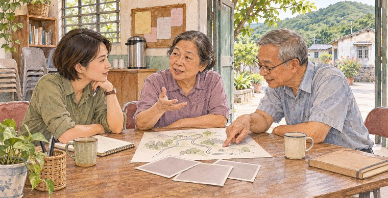

HSP-10 · 香港 · 10–15 分钟 · 旅游 · 社区合作 · 旅游目的地管护
一场村落导览，讲谁的故事？

新闻里
2026年7月29日，香港的乡郊保育资助计划公布了六个获批项目，其中两个是文化复兴项目，拟开展文化旅游和生态旅游活动。
获批和提出计划，并不等于取得了可测量的成效。下文的运营商、村落和活动方案均为虚构。
课堂决策
虚构的课堂情境。 Harbour Paths 是香港一家小型旅游运营商，正为一座未具名的村落选择一套文化遗产徒步导览方案，共开四场。每场90分钟，最多接待12名成年访客。两种方案的总成本都是24,000港元，涵盖导游报酬、筹备、预订、材料、场地以及两种方案之间有差异的所有成本。
两条路线都已取得必要许可，落实了规定的安全和无障碍安排，配备了胜任的导游，所用历史资料来自公开来源，内容准确。当地相关人士参与了路线设计，筹备阶段的本地投入也有报酬。约定的通行范围不包括私人住宅，也不会妨碍居民。
不参加的居民无需表演，也无需以其他方式参与。个人有权拒绝，隐私和对本人故事使用方式的决定权也继续受到保护。没有哪个协会能代表所有人，受影响的邻居也有渠道反馈意见。现有的必要安排继续获得经费保障。
两种方案都可行，也都在预算之内。要决定的是具体开发哪种产品、开放哪种产品的预订，而不是要不要把未经同意的访问安排当作卖点。没有额外场次，也没有不增加成本的混合方案。
| 同样的四场导览预算 | A · 运营商主导 | B · 与居民共同接待 |
|---|
| 活动安排 | 专业导游沿约定路线讲解经查证的公开历史资料 | 专业导游讲解60分钟；与领取报酬的居民交流30分钟 |
| 开团日期 | 开放预订前，从八个可选日期中选定四个 | 四个固定日期 |
| 当地居民的角色 | 筹备阶段提供有偿建议；无需到场 | 领取报酬的共同接待者参与设计并亲自呈现自己负责的内容 |
| 主要取舍 | 排期灵活，概述内容稳定；不承诺安排亲历者交流 | 能直接听到个人讲述，内容由双方共同把关；排期自由度较低 |
B 已预留日期，预算也已纳入筹备、场地、接待者报酬和应急替补安排。作出承诺前，须敲定完整的接待安排。A 在开放预订前选定日期，此后须履行通常的预订承诺。
两种方案都提供 4 × 12 = 48 个可预订名额，并不保证实际到场人数。24,000港元 ÷ 4 = 平均每场6,000港元。案例没有提供票价，也没有给出需求或利润预测。
你的决策你会暂时选择 A 还是 B？关于访客的来访目的、居民接待安排或排期，哪些具体证据可能改变你的选择？
第二轮 · 多了一项资料
在一次有偿的共同设计会议上，B 拟出了具体方案，沿用现有预算和四个固定日期。两名成年居民将轮流担任共同接待者，另有一名领取报酬、已了解职责的替补。他们决定带来家庭照片的副本和一张简单的路线草图，聊聊在他们亲历的几代人中，村里人往返村落与集市的方式有了哪些变化。
他们讲述的是自己的回忆，而不是为全村讲一个统一的故事。专业导游会补充有文献依据的背景，并区分个人记忆与经核实的事实。
接待者有权审核同意自己提供的内容及相关宣传表述。交流在获准使用的社区活动室举行，而不是在他们家中。访客无权录制交流内容或再次使用私人照片；如需进一步授权，须另行征得当事人自愿同意。
双方约定筹备和现场接待的边界，并在每场活动结束后回顾，让接待者可以调整今后提供的内容，而不必无限制地开放访问或无偿工作。这说明虚构的方案已经细化，并不意味着试办已经证实访客满意或全村一致认可。A 仍是可选方案，内容仍然准确；B 的日期仍然固定。
你的决策共同设计的接待方案会改变你的选择吗？说说你能获得什么，哪些限制依然存在。扩大项目之前，你会查看哪一项访客方面的成效，以及哪一项接待者或社区方面的成效？
谁提供内容，谁作决定？
A 用查证过的历史资料和当地人士提供的有偿建议来讲解村落。B 多了一个交流环节，由具体的、自愿参与的社区成员共同设计并开展。获得报酬，不等于能影响自己提供的内容如何被使用。
细化后的方案让 B 的居民接待环节可以落实，但不把居民的日常生活变成访客一定能接触到的内容。接待者的讲述之所以重要，是因为它反映了他们自身处境下的视角，并不能自动证实每一项历史说法，也不能代表所有邻居。
别低估运营商主导方案的合理性
如果访客需要更灵活的日期、内容稳定且有资料依据的概述，或希望选择一种对居民持续投入要求较少的形式，A 可能更合适。它并不虚假，也不是天然就不合乎伦理。
B 提供的是一种不同的交流体验，并不必然更真实、让访客学得更多或带来更高利润。即使第二轮公布了具体安排，固定日期、双方共同把关内容以及个人讲述不尽相同，仍是实际约束。
只承诺实际提供的活动
要让访客知道，他们预订的是由导游带领、沿公共路线展开的历史徒步导览，还是在指定日期由导游和居民接待者共同开展的交流活动。两种方案都不包含强制购物、进入私人住宅、文化表演或录制权，也不保证有能代表村落的人出面。
增加日期、授予新的录制权或推出混合方案，都需要资源，也需要重新达成协议。不要擅自扩大接待者或访客已经同意的范围。
分别了解访客和接待者的体验
问问访客，这次体验是否达到了事先说明的目的，他们是否理解有文献依据的历史与个人讲述之间的区别。
问问接待者，工时、报酬和故事使用边界在实际执行中是否合适；也要听取受影响但未参与的居民的意见。对他们提出的顾虑作出回应，不要把没有投诉当成同意。仅凭名额售罄或访客满意，不能认定项目对社区有长期益处。
教师说明
要求学生先选一个暂定方案，而不是无限期征求意见。第二轮信息让 B 的可行性更明确，但没有消除 A 在排期和执行方面的优势。无论选哪一种，都不因此取得支配居民或使用其故事的权利。
把容量计算和实际成效分开：两种方案都是四场，最多提供48个名额。A 有八个备选日期，不等于开八场；有三名接待人员，也不意味着可以同时开场。B 的 60 + 30 分钟加起来，仍是同样的90分钟。
教学重点是社区在旅游产品中的自主决定权，不是增加感官体验形式，也不是让到场人数最大化。机构框架可以帮助提出范围明确的问题，但不能用来给这个虚构项目做认证，也不能证明它具有可持续性。
第二轮
在一次有偿的共同设计会议上，B 拟出了具体方案，沿用现有预算和四个固定日期。两名成年居民将轮流担任共同接待者，另有一名领取报酬、已了解职责的替补。他们决定带来家庭照片的副本和一张简单的路线草图，聊聊在他们亲历的几代人中，村里人往返村落与集市的方式有了哪些变化。
他们讲述的是自己的回忆，而不是为全村讲一个统一的故事。专业导游会补充有文献依据的背景，并区分个人记忆与经核实的事实。
接待者有权审核同意自己提供的内容及相关宣传表述。交流在获准使用的社区活动室举行，而不是在他们家中。访客无权录制交流内容或再次使用私人照片；如需进一步授权，须另行征得当事人自愿同意。
双方约定筹备和现场接待的边界，并在每场活动结束后回顾，让接待者可以调整今后提供的内容，而不必无限制地开放访问或无偿工作。这说明虚构的方案已经细化，并不意味着试办已经证实访客满意或全村一致认可。A 仍是可选方案，内容仍然准确；B 的日期仍然固定。
你的决策共同设计的接待方案会改变你的选择吗？说说你能获得什么，哪些限制依然存在。扩大项目之前，你会查看哪一项访客方面的成效，以及哪一项接待者或社区方面的成效？